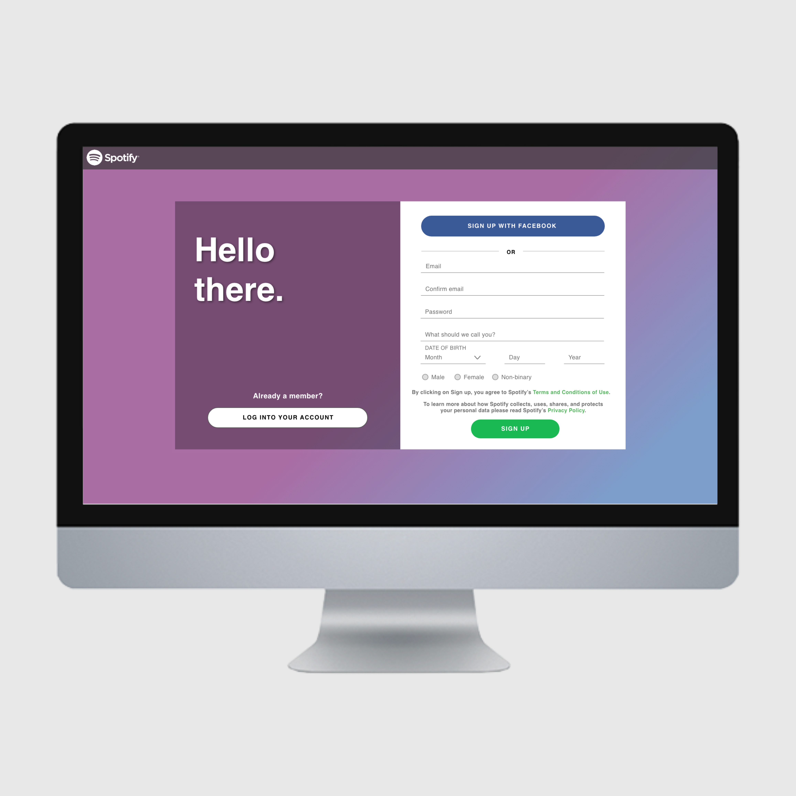

Spotify
Redesigning the Login Experience
Overview
The goal of this project was to apply learned interaction design principles to improve a microinteraction within an existing website.
I chose to redesign the Spotify log in/sign up pages to create a smooth, more transparent experience for users switching between two modes.
Audience
The audience for this project are people who:
- Are trying to log in to an existing Spotify account
- Are trying to create a new Spotify account
Team/Role
I worked alone on the overall project, although I did get feedback from a group of classmates on design decisions during the ideation phase. Their feedback helped me improve my overall design and gave insight on potential solutions that I otherwise could have overlooked.
Constraints
Short time period. I had three weeks to define the problem, conduct research, create a prototype, and test it with users.
Limited tool knowledge. This project was a great opportunity to improve my Ui and visual design skills. At this point in time, I was becoming familiar with prototyping tools like Sketch, inVIsion, an Adobe XD, but creating a smooth and visually appealing microinteraction proved to be a unique challenge.
Design Process
Defining the Problem
I didn’t start this project with this particular product or problem in mind. I began by doing a round of crazy 8s to think of some fun microinteractions to design. Once I did this, I decided I wanted to focus on a log in/sign up screen toggle.
I did another round of crazy 8s focusing on different ways to toggle between a log in/sign up page. This was a great way for me to get a lot of ideas out at once and get my creativity flowing.
Even with all of these sketches, I still felt lost with what to do next and didn’t feel confident with this project. I realized that I started my project completely wrong. I was using crazy 8s to think of problems to solve, not solutions. In order for me to move forward, I needed to define my problem and what/who I was solving for.
I knew I wanted to focus on a log in/sign up toggle, so I started analyzing current experiences on different web pages. I wanted to find a specific web page to focus on so I could build my design based on what their specific users need and create visuals that match with their brand. After some browsing, I decided on the website for Spotify, a media-streaming service.
Research
I decided the best way to identify the goals of my redesign was to run some AB testing with a group of users. With their feedback, I could figure out the pain points with the current experience and base my design off of these problem areas. I asked users how they felt about the current experience and got a variety of feedback, like:
- “That’s terrible.”
- “How do I get back?”
- “It’s alright, just pretty plain.”
- “This is too much.”
I redefined my problem statement to reflect what my users were saying. Redefining my user’s problem helped me establish some design goals for myself and helped me stay focused on problem solving instead of getting lost in the pretty visuals of a microinteraction.
Spotify’s login/sign up page has information that feels hidden, causing users to feel confused and untrusting.
I spent a lot of time on Spotify’s website as well as their app so I could gather some data on other interactions within their product. I also did some research on Spotify’s branding guidelines to see what constraints Spotify developers and designers may be working within and try to understand what drove the decisions for the current experience. I wanted to make sure any design decision I made would create a better experience for Spotify’s users without sacrificing the look and feel of Spotify’s brand.
Design/Testing
There were three main design goals I had for this project:
- Create a layout that is easy to navigate
- Use colors and visuals that build trust with the Spotify brand
- Have important information presented methodically
I created a mid-fidelity wireframe that would hopefully achieve my first goal. I tested it with my users and asked them to compare the ease of use to the current experience. Again, I was using AB testing to see if my design was an improvement while still meeting my user’s needs.
Once I got positive feedback from the previous round of testing, I moved forward with the visual design. I used colors that I believed would associate my design with Spotify’s brand to build trust with my users. The colors and placement of text and buttons also helped me create a visual hierarchy that would help users easily sort through the important information presented to them.
For this round of testing, I got two important items of feedback from users:
- The information and navigation was much easier to understand
- While the background colors reminded them of Spotify, they weren’t exactly visually appealing (they hated the dark box over the color orange and once they pointed it out to me, I honestly hated it too).
I changed up the background colors with my user feedback in mind and brought it back to them for one final round of testing. There was a positive reaction to the color change and with that, I achieved all three of my design goals.
Results
View my interaction prototype here.
Made with Adobe XD
Retrospective
At the end of the project, I realized how important it is to define the problem before starting to design solutions. I initially skipped the problem definition phase of my design process, and doing so really put into perspective how important each step of a project is and how not putting enough effort into one small part of something can keep it from succeeding as a whole.
Even if I’m handed a project with a well laid out problem definition, I would still like to take time to make sure the problem I’m solving for is the right one before moving on to designing potential solutions. Being 110% sure about your problem statement gives yourself and your team the confidence and knowledge to move forward.
If I had more time for this project, I would have loved to continue practicing with different prototyping tools to create a smoother transition.